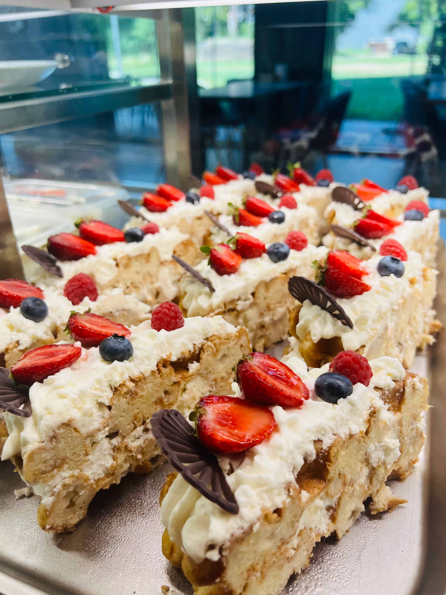
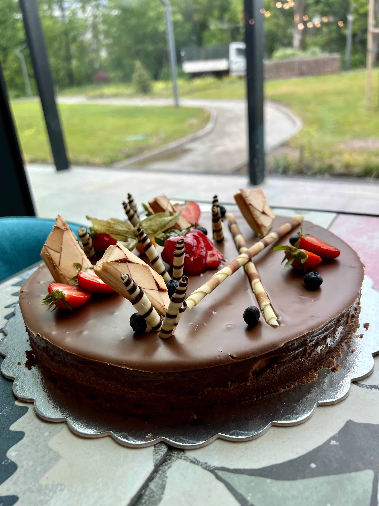
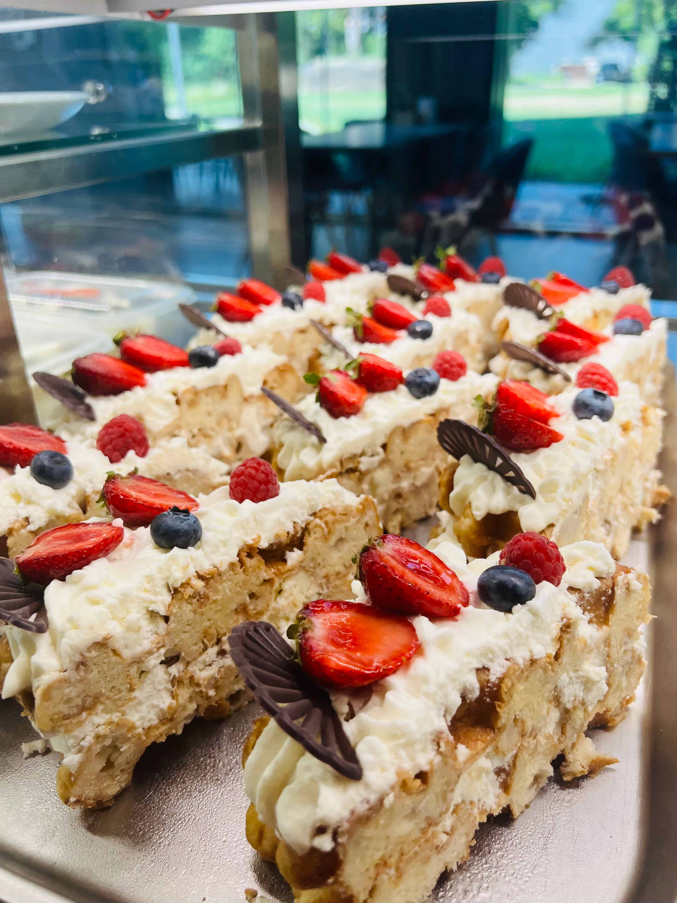
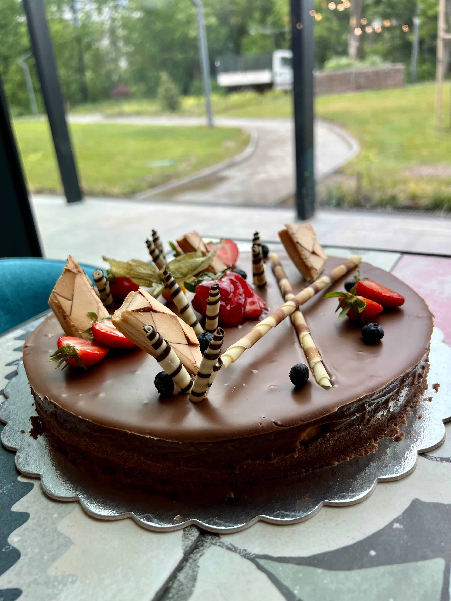

Тук сме, за да ви чуем! Вашите отзиви, запитвания и коментари са важни за нас. Ако имате въпроси, предложения, резервирате маси, искате на поръчате кетъринг или торта, нашият приятелски екип от Food Depot е само на едно съобщение или телефонен разговор разстояние от вас. Нека се свържем и направим изживяването ви още по-специално.
Ние от Food Depot разбираме, че храната може да преобрази едно обикновено събитие в необикновено.
Ето защо се радваме, че предлагаме кетъринг услуги, които носят възхитителните вкусове от нашия ресторант
директно за вашите специални поводи. Независимо дали става дума за корпоративно събиране, зa сватба, рожден
ден или всяко друго събитие, нашите талантливи готвачи и специализиран персонал е тук, за да организира
уникално кулинарно изживяване, което ще остави гостите ви във възторг. Ние предлагаме широка гама от
персонализирани опции за кетъринг, които да отговорят на вашите предпочитания. Ние гарантираме, че всяко
ястие е подготвено с такова внимание към детайла и качеството, така че да надхвърли вашите очаквания. Нека
ние се погрижим за храната, а вие да се съсредоточите на 100% за създаване на вашите най-съкровени спомени!
Свържете се с нас днес, за да помислим заедно как можем да направим вашето събитие по-добро чрез нашите кетъринг услуги!
събитие с нашите кетъринг услуги.
Вкусът от вашия празник става още по-сладък с нашите незабравими торти, приготвени и декорирани специално
за вас. Предлагаме възможността на нашите клиенти да се почувстват специални с възхитителна торта, направена
по поръчка. Независимо дали за празнуване на рожден ден, на годишнина или друг важен момент, нашите квалифицирани
сладкари са тук, за да създадат шедьовър, който ще бъде внимателно изработен, за да отговаря на вашия личен стил
и предпочитания. Просто ни кажете какво си представяте и ние ще го направим, като превърнете мечтите си в реалност.
За да поискате персонализирана торта за вашия празник, просто се свържете с нас предварително и ще се радваме да
направим вашия празник наистина незабравим.
.jpg)
.jpg) 



Ние, Food Depot, вярваме в откритата комуникация с нашите ценни гости. Независимо дали
питате за резервации, искате да предоставите обратна връзка, ние сме тук, за да слушаме.
Можете да се свържете с нас по всяко време по телефона, и мейл или като ни посетите лично.
Нашият посветен екип е готов да ви помогне по всякакъв възможен начин. Ако имате въпроси, специални
заявки или искате да обсъдите организиране на събитие в нашето заведение, моля, не се колебайте да
се свържете с нас. Ние се ангажираме да направим вашето изживяване с Food Depot незабравимо, започвайки
от момента с протегнатата ръка. Свържете се с нас днес и нека направим контакта, който ще доведе до едно
успешно сътрудничество и прекрасно кулинарно изживяване.
FaceBook
0888874004
fooddepotsofia@gmail.com
ул.Сребърна 16 кв. Хладилника, София,
България 1407